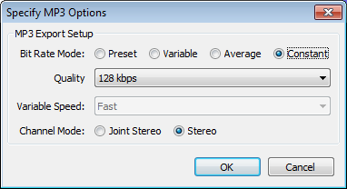

Export Multiple
From Audacity Manual
Export Format and Location
- Export format: Choose one of the available export formats from this menu. See Export Formats supported by Audacity for advice on which format to choose.
| Always select the "Export format" before clicking the Options button. |
- Options... button: Click this button to choose the options for the export format you have chosen. It opens another dialog for making settings like quality or encoding for formats with options. As an example, here are the Options dialogs for the Uncompressed and MP3 formats:


- Export location: Shows the location where the files will be exported to.
- Choose: Opens a standard file-save dialog box where you can choose the location where the files will be exported to.
- Create: Type a file path in the "Export Location" box then click Create and that directory will be created. If a partial file path is specified that directory will be created in the same folder in which the Audacity application resides. For example, typing "myLP/myTracks" in the Export Location box and then clicking the Create button will create the folder "myLP" in the same directory as the Audacity application, and the folder "myTracks" inside the "myLP" folder. Use this function with caution and only if you know what you are doing - it is possible to create folders in non-standard locations for your operating system. Note that you will receive a "success" message even when you specify an existing file path or directory.
- After pressing "Export", Metadata Editor (for embedded file information such as artist or genre) will appear for each file to be exported, unless you disable it for the export step in the Import / Export Preferences.
- Unlike single exports, Export Multiple exports any audio before time zero (as shown by the presence of two arrows at the left edge of the waveform).
Split files based on:
- Labels: Choose this option if your project consists of one stereo or mono track as well as one label track. Only labels in the uppermost label track are used for export. The label track must contain at least one point or region label thus:
- Point labels mark the start of each section of audio you want to make into a separate file
- Region labels span each section of audio you want to make into a separate file.
- Include audio before first label: Check this option only if you do not have a point label marking the start of the first file, or do not have a region label spanning the first file.
- First file name: If you have checked "Include audio before first label", this option will be enabled. Type in the name you want to be used for the first exported audio file. If you have imported audio files, this text box contains the name of the first imported file, but you can still change the text.
- Tracks: Export each track in your project to a separate file. Labels are ignored.
As with exporting based on labels, the metadata exported for each file will be the same (except for Track Title and Track Number) unless your Import / Export Preferences are set to show Metadata Editor and you enter the metadata for each file manually. If you want to import and export multiple audio files and preserve each file's tag values automatically, use Chains instead.
Name files:
- Using Label/Track name: Each file will be named exactly as the name of each label if "Split files based on Labels" was selected, or exactly as the name of each track if "Split files based on Tracks" was selected. If any labels are empty, Audacity will name each such file as "untitled" and add a number if necessary to distinguish multiple "untitled" files.
- Numbering before Label/Track Name: Label or track names are used, but a consecutive two-digit number and a hyphen are prefixed to each file name. The numbering starts from "00-" if you chose "Include audio before first label", or from "01-" if you did not. This is a good choice if you are burning tracks to Audio CD.
If the labels were empty in the above case, the exported files would be "01-untitled" and "02-untitled".
- Numbering after File Name Prefix: Label or track names are ignored. Instead, each file is named using a standard prefix specified in "File Name Prefix" below, followed by a hyphen and a consecutive two-digit number. The numbering starts from "-00" if you chose "Include audio before first label", or from "-01" if you did not.
- File Name Prefix: The file name prefix to be used when exporting with a standard prefix followed a consecutive number. If you have imported audio files, this text box contains the name of the first imported file, but you can still change the text.
Other Options
- Overwrite existing files: This item is always on (checked) by default. When checked, any pre-existing files in the chosen export location which have the same name as the file to be exported will be replaced (without prompt) by the new file. If unchecked, any files to be exported which have the same name as pre-existing files in the export location will be renamed with a hyphen and numerical suffix. The pre-existing files are left "as is". The first file which is exported with an identical name is renamed with suffix "-2" and subsequent files exported with that same name are renamed with suffix "-3", "-4" and so on.
Export and Cancel
Clicking the button will export the audio to the file location, name(s) and type you have selected.
Clicking the button will abort the export dialog without exporting any files.
Export progress dialog
Once you have clicked the button Audacity will display a dialog enabling you to monitor the progress of the export:
The geen bar is a visual indicator of progess. The Elapsed Time and Remaining Time are estimates and may change as the export progresses.
Clicking the stops the export of the current labelled "song" where it is now, leaving the part exported file in place. It then it moves on to start processing the next labelled "song".
Clicking the stops the export of the current labelled "song" where it is now, leaving the part exported file in situ - and then cancels the rest of the imports, returning to the Export Multiple dialog.
Export results
Once the Exports have completed a status window is displayed showing the results of the exports:
Click the button to close the Export Multiple and return to the project.
Examples of use of labels with Export Multiple
Case 1: A point label marking each song
-
- In this case the first file will be named "First song" and will contain the audio between the "First song" label and the "Second song" label.
- Similarly the second file will be named "Second song" and will contain the audio between the "Second song" label and the "Third song" label, and so on for the rest of the labels.
- The last file will contain the audio from the last label to the end of the audio track and will be named according to the last label in the label track.
Case 2: A region label marking each song
-
- In this case the first file will be named "First song" and will contain the audio spanned by the "First song" label.
- Similarly the second file will be named "Second song" and will contain the audio spanned by the "Second song" label, and so on for the rest of the labels.
- Any audio beyond the last region label will not be exported
Case 3: A point label marking each song except the first
- This is a case where you would want to check "Include audio before first label" and supply a file name in the "First file name" text box.
- The first file will be named whatever is typed into the "First file name" text box and will contain the audio between the start of the track and the "Second song" label.
- Similarly the second file will be named "Second song" and will contain the audio between the "Second song" label and the "Third song" label, and so on for the rest of the labels.
- The last file will contain the audio from the last label to the end of the audio track.
Case 4: Region labels marking two selected songs
- In this case we want to export only two songs - perhaps songs by the same artist from a compilation album. Each song is marked with a region label.
- Only two files will be exported - "Second Song" and "Fourth Song" - corresponding to the audio spanned by those labels. No other audio will be exported.
Case 5: A mix of point and region labels
In the case above we have an interview with a series of questions (upper track) and answers (lower track), and a concluding statement by the interviewer. We want to export the question-answer pairs and the interviewer's conclusion as separate files.
In most cases the question-answer pairs follow one after another, so point labels are a quick and convenient way to mark them. However after the third answer, the interviewer is told by the studio manager that time is running out, and the two parties discuss this. We want to omit this exchange.
- We mark the start of the first two question-answer pairs with point labels "QA1" and QA2".
- We mark the third pair with a region label "QA3" since we want to omit the discussion about running out of time.
- We mark the start of the fourth pair with point label "QA4" and the start of the interviewer's conclusion with point label "Outro".
So this is what will be exported:
- The first file will be named "QA1" and will include the audio between the "QA1" and "QA2" point labels.
- The second file will be named "QA2" and will include the audio between the "QA2" point label and the start of the "QA3" region label.
- The third file will be named "QA3" and will include the audio spanned by the "QA3" region label.
- The fourth file will be named "QA4" and will include the audio between the "QA4" and "QA5" point labels. Note that the audio between the end of the "QA3" region label and the "QA4" point label is not exported.
- The final file will be named "Outro" and will include the audio between the "Outro" label and the end. Had we decided to cut off the conclusion half way through, we would have selected what we wanted to keep and labeled that, producing a region label "Outro" instead. Then the audio beyond the "Outro" label would not have been exported.